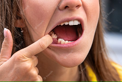

People With Poor Oral and Dental Health Can Face Several Ramifications That Can Impact Their Overall Well-Being:
- Tooth Decay and Pain: Poor oral hygiene practices, such as inadequate brushing and flossing, along with high consumption of sugary foods and drinks, can lead to tooth decay. Untreated cavities can cause toothaches, discomfort, and pain, making it difficult to eat, sleep, concentrate, and perform daily activities.
- Gum Disease: Inadequate oral hygiene can lead to gum disease (gingivitis and periodontitis). Gum disease causes inflammation, bleeding gums, and bad breath. If left untreated, it can result in gum recession, bone loss, and eventually tooth loss.
- Tooth Loss: Advanced tooth decay, gum disease, or trauma can lead to premature tooth loss among younger individuals. Losing teeth at a young age can have functional, aesthetic, and psychological impacts, affecting speech, chewing ability, self-confidence, and overall quality of life.
- Malocclusion and Orthodontic Issues: Poor oral health habits and irregular growth and development can contribute to malocclusion, such as crowded teeth, misaligned bite, or protruding teeth. These issues may require orthodontic treatment, such as braces or aligners, to correct, which can be costly and time-consuming.
- Impact on Growth and Development: Oral health problems in younger individuals can disrupt normal growth and development of the jawbones, teeth, and facial structures. Untreated issues like malocclusion or early tooth loss can hinder proper oral and facial development, requiring more extensive treatments later in life.
- Impact on Nutrition and Overall Health: Oral health problems can affect eating habits and nutrition. Painful teeth or gum disease can make it difficult to chew and eat certain foods, leading to a limited diet and potential nutrient deficiencies. Poor oral health has also been associated with systemic health conditions like cardiovascular disease and diabetes.
- Psychological and Social Impacts: Poor oral health can have psychological and social consequences for younger individuals. Dental pain, tooth loss, bad breath, and aesthetic concerns can negatively impact self-esteem, confidence, and social interactions.
- Higher Treatment Costs: Neglecting oral health in younger years can lead to more extensive and costly dental treatments in the future. Early preventive measures and regular dental care are more cost-effective and can help avoid more complex and expensive procedures down the line.
It is important to prioritize good oral hygiene practices, regular dental check-ups, and prompt treatment of any oral health issues to prevent these ramifications and maintain optimal oral and dental health throughout life.
